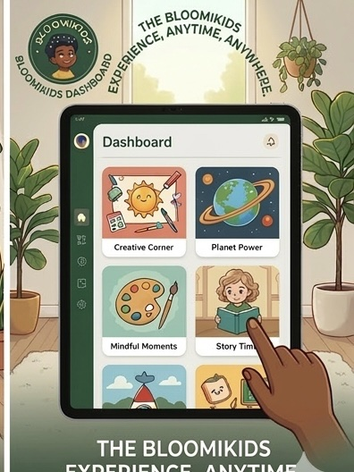
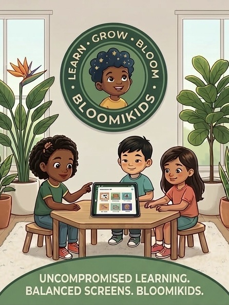

BloomiKids didn't start in a boardroom. It started in a living room — with a curious toddler, a pandemic, and a mom who knew exactly what was missing.

With a degree in Human Development and Education and a minor in Psychology, I entered the classroom with a deep understanding of how young minds grow — not just academically, but emotionally and physically too. I began my career as a Kindergarten teacher, and it was there that I noticed something that stayed with me: by the time many children reached Kindergarten, some were already behind on the foundational skills they needed to thrive.
"By Kindergarten, some children were already missing out on the basics — and I knew the earlier we reached them, the better."
— Founder, BloomiKidsThat realization led me to move to Pre-Kindergarten, where I could meet children at the very start of their learning journey. Teaching little ones aged 3 and 4 reinforced everything I believed: the earlier you nurture curiosity, movement, and confidence, the stronger every foundation becomes.
From there, my career grew. I worked my way up to becoming a Director at several daycares — where I saw the full picture. What children needed, what parents struggled to find, and what the existing tools were missing.
In 2021, at the height of the COVID-19 pandemic, I gave birth to my son. Daycares were closing everywhere. Parents were scrambling. And I found myself at home with my newborn, drawing on every year of training and experience I had — because this time, the child I was educating was my own.
I searched for apps and tools that could help me structure his learning. Something that would build foundational skills, help my very active little boy slow down and be more intentional, and incorporate the mindful movement I knew made a real difference — yoga poses, breathing, focus, fun. I could not find a single thing that brought it all together.
"I searched everywhere. I couldn't find anything that incorporated all these things — so I set out to create something my child and his friends would love to use every single day."
— Founder, BloomiKidsAs an educator, I knew the difference between passive screen time that numbs a developing mind and purposeful screen time that actively builds one. I wanted something children would genuinely love coming back to — day after day — without parents ever having to worry about what they were being exposed to.
That is how BloomiKids was born. Out of years in classrooms, boardrooms, and my own living room floor. Out of a mother's love and an educator's knowledge. It's built for the children who deserve the very best start — and for the parents who want to give it to them.
With love & purpose,

Ready to give your child a place where learning, movement,
and mindfulness come together?
🔒 14 days free · No credit card needed · Cancel anytime